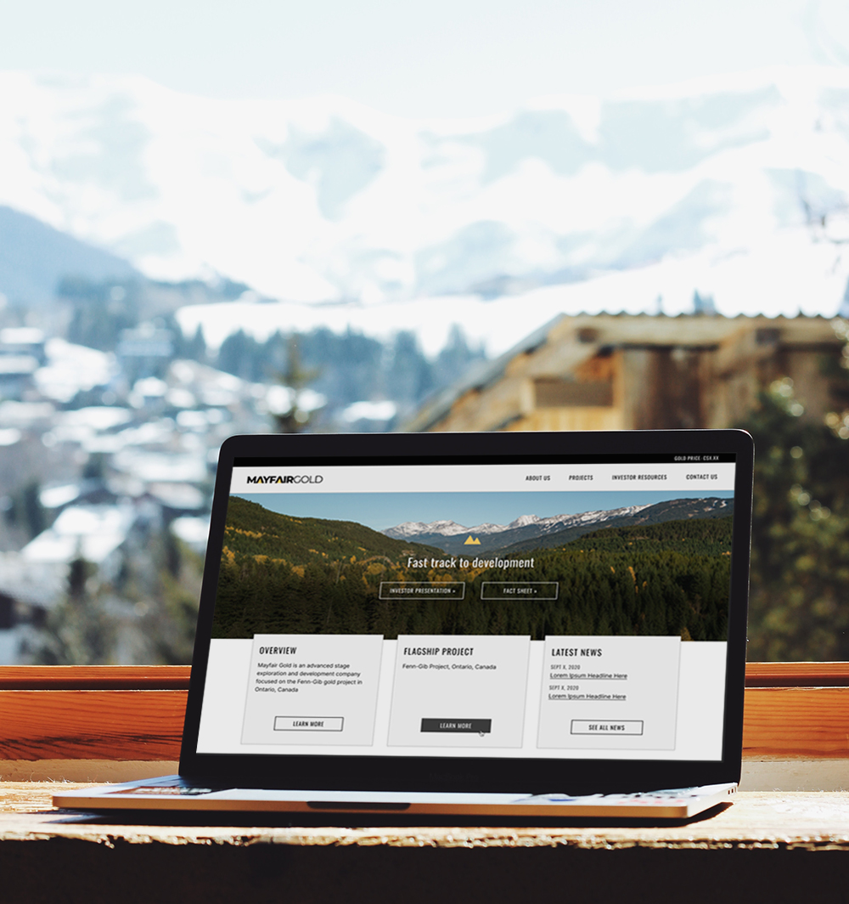
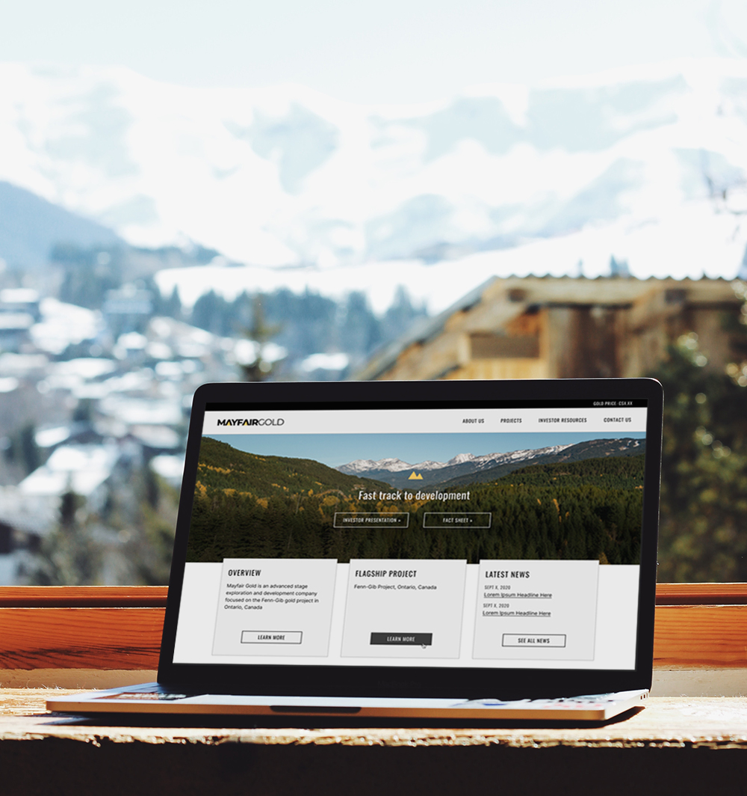

Clean, modern and vibrant visual aesthetic
Following a branding comparative audit and stakeholder input, considerations in creating Mayfair's visual identity included:
- Differentiation through modernity: Mayfair's look-and-feel endeavors to be bold like that of industry counterparts but more contemporary, achieved through simplicity in layout and intentional use of rich color
- Readability: Type and color selections anticipated accommodation of information-heavy longform text content
Typography
Inter is used as the site’s primary typeface given its legibility thanks to its tall x-height.
Oswald is used predominantly for headlines, where its robust weight reinforces hierarchy and its condensed width [optimizes horizontal space efficiency.]
Colors
To keep the site professional and breathable, Mayfair uses a classic, neutral color palette that is brightened by hints of the brand’s signature golden yellow tone.
Photography
Vibrant nature imagery of the Ontario area is used in the hero areas of the website, which serves to provide visual interest and complement the brand’s neutral color palette.
Interaction Design
A corporate website communicates various types of information upon which the investing community relies to make decisions.
With interests ranging from regulatory financial filings to corporate responsibility disclosure, the investor user would benefit from design considerations meant to improve findability and discoverability of such information and to ensure more comfortable reading and navigation experiences - including when performing investment research on mobile.
 
